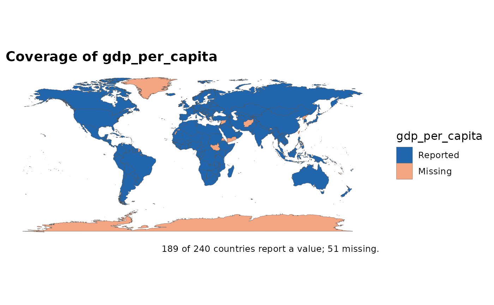

A choropleth of whether a value is present, rather than what it is. The
companion to audit_coverage(), which reports the same thing as a table: a
world map with a large well-covered region and a systematically empty one is
telling you something about the indicator that the headline map hides behind
a uniform grey.
Arguments
- data
A map-ready frame (polygon or
sf).- value
The column whose availability to map (unquoted).
- by
Optional grouping column for a panel: with a
yearcolumn, useby = yearto see coverage change over time.- title
Optional plot title (defaults to a generated one).
- ...
Passed to
world_map().
Examples
# \donttest{
snap <- countryatlas::world_snapshot$countries
if (requireNamespace("maps", quietly = TRUE)) {
attach_geometry(snap, geometry = "polygon") |>
coverage_map(gdp_per_capita)
}

# }